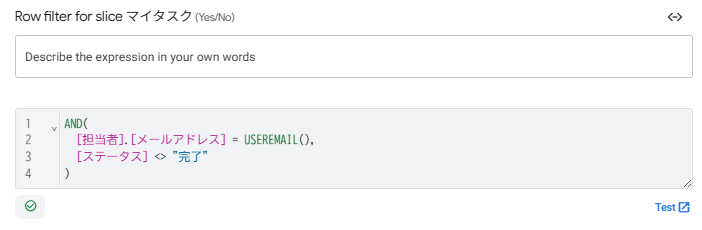

Sliceの応用と動的フィルタ
7-1 Sliceの応用 ─ 中級編との違いと設計方針
Slice は中級編で「申請中の休暇だけ表示する」という形で学びました。上級編では、ログインユーザー・日付・ステータスを組み合わせた複合条件 で、より実用的な絞り込みを実現します。
■ 中級編との違い
| レベル | Sliceの使い方 | 条件の例 |
|---|---|---|
| 中級編 | 固定条件で絞り込み | [承認ステータス] = "申請中" |
| 上級編 | 動的条件(関数)で絞り込み | USEREMAIL() や TODAY() を条件に使用 |
■ Security Filter と Slice の使い分け(復習)
第3章で Security Filter を設定しましたが、Slice との違いをあらためて整理します。
| 比較項目 | Security Filter(第3章) | Slice(本章) |
|---|---|---|
| 目的 | アクセス制御(見せてはいけないデータを隠す) | 便利な表示(見たいデータを絞り込む) |
| 適用範囲 | テーブル全体(全ビュー共通) | Sliceベースのビューのみ |
| セキュリティ | 強い(迂回不可) | 補助的(迂回可能) |
| 本マニュアルでの使い方 | メンバーは自分の担当タスクのみ(強制) | 「今週の期限」「進行中のみ」など(便利機能) |
■ 本章で作る3つの Slice
| No. | Slice名 | テーブル | 条件の特徴 |
|---|---|---|---|
| 1 | マイタスク | タスク | USEREMAIL()で自分の担当 + 未完了のみ |
| 2 | 今週の期限タスク | タスク | TODAY()で今週の期限のタスクを動的抽出 |
| 3 | 進行中プロジェクト | プロジェクト | ステータス=進行中のプロジェクトのみ |
- 「誰の」「いつの」「どの状態の」データを見たいかを明確にしてから Slice を作る
- Slice 名は 「誰が見ても意味がわかる名前」 にする(例:「マイタスク」「今週の期限タスク」)
- Security Filter で制御すべきもの(権限)と Slice で絞り込むもの(利便性)を混同しない
7-2 「マイタスク」Slice ─ ログインユーザーの担当のみ
ログインしているメンバーが 自分の担当で、かつまだ完了していないタスク だけを見られる Slice を作ります。「今日やるべきこと」を確認する画面に最適です。
- Slice name
マイタスク- Source table
- タスク
- Row filter condition
- 下記
- 用途
- ログインユーザーの担当＋未完了のタスクのみ
AND(
[担当者].[メールアドレス] = USEREMAIL(),
[ステータス] <> "完了"
)■ 条件式の解説
| No. | 条件 | 意味 |
|---|---|---|
| ① | [担当者].[メールアドレス] = USEREMAIL() | タスクの担当者が、今ログインしている人 |
| ② | [ステータス] <> "完了" | かつ、ステータスが「完了」ではない(未着手・進行中・レビュー中) |
■ 作成手順
左メニューの Data から タスク テーブルを開き、テーブル名の右に表示される 「+」 アイコンをクリックします。
「Create a new slice for タスク」 ボタン(青いボタン)をクリックします。
次の通り設定します。
・Slice name:マイタスク
・Row filter condition:上記の AND 式を入力
Save をクリック。

USEREMAIL() を使った Slice をテストする際は、Security Filter の式と同様に USEREMAIL() の部分をテスト用のメールアドレスに一時的に書き換える 必要があります。テスト後は必ず USEREMAIL() に戻してください。7-3 「今週の期限タスク」Slice ─ 日付の動的フィルタ
期限が今日から7日以内 のタスクだけを表示する Slice を作ります。これにより、直近で対応が必要なタスクだけに集中できます。
- Slice name
今週の期限タスク- Source table
- タスク
- Row filter condition
- 下記
- 用途
- 今日から7日以内に期限が来る未完了タスク
AND(
[ステータス] <> "完了",
[残日数] >= 0,
[残日数] <= 7
)■ 条件式の解説
| No. | 条件 | 意味 |
|---|---|---|
| ① | [ステータス] <> "完了" | 完了済みは除外 |
| ② | [残日数] >= 0 | 期限超過は除外(第5章のSliceと重複しないように) |
| ③ | [残日数] <= 7 | 期限まで7日以内 |
条件②で [残日数] >= 0 としているのは、第5章で作成した「期限超過タスク」Slice(残日数 < 0)との棲み分け のためです。期限超過はダッシュボードに表示済みなので、こちらでは「まだ間に合うけど急ぎ」のタスクだけを抽出します。
■ 作成手順
Data → タスク → 「+」 → 「Create a new slice for タスク」
Slice name:今週の期限タスク
Row filter condition:上記のAND式を入力
Save
[残日数] Virtual Column を作っていなければ、この Slice の条件式は AND([期限] >= TODAY(), [期限] <= TODAY() + 7, ...) のように冗長になっていました。Virtual Column であらかじめ計算しておくと、Slice の条件式がシンプルになる というのが上級編の設計テクニックです。7-4 「進行中プロジェクト」Slice ─ ステータスフィルタ
プロジェクト一覧から 完了・中止のプロジェクトを除外 し、現在アクティブなプロジェクトだけを表示する Slice を作ります。
- Slice name
進行中プロジェクト- Source table
- プロジェクト
- Row filter condition
- 下記
- 用途
- ステータスが「計画中」または「進行中」のプロジェクトのみ
OR(
[ステータス] = "計画中",
[ステータス] = "進行中"
)■ なぜ「<> 完了 AND <> 中止」ではなく OR で書くのか
この条件は2通りの書き方ができます。
// 書き方A: 表示したいステータスを列挙(OR) ← おすすめ
OR([ステータス] = "計画中", [ステータス] = "進行中")
// 書き方B: 除外したいステータスを列挙(AND + NOT)
AND([ステータス] <> "完了", [ステータス] <> "中止")どちらでも結果は同じですが、書き方Aの方がおすすめです。理由は、将来ステータスの選択肢が増えた場合(例:「保留」を追加)に、書き方Bでは新しいステータスが自動的に表示されてしまいます。「見せたいものだけ明示する」ほうが安全です。
■ 作成手順
Data → プロジェクト → 「+」 → 「Create a new slice for プロジェクト」
Slice name:進行中プロジェクト
Row filter condition:上記のOR式を入力
Save
7-5 Sliceベースのビューを配置する
3つの Slice を作成したら、それぞれを ビューとして画面に配置 します。Slice を作っただけではアプリ画面には表示されないため、この手順が必要です。
■ 作成するビュー
| No. | View name | For this data | View type | Position |
|---|---|---|---|---|
| 1 | マイタスク | マイタスク(Slice) | table | menu |
| 2 | 今週の期限タスク | 今週の期限タスク(Slice) | table | ref |
| 3 | 進行中プロジェクト | 進行中プロジェクト(Slice) | table | ref |
■ ① マイタスクビューの作成
📱 Views → + Add View → Create a new view
・View name:マイタスク
・For this data:マイタスク(Sliceを選択 ─ テーブルではなく Slice 名を選んでください)
・View type:table
・Position:menu(下部メニューに表示)
Column order で表示カラムを追加します。おすすめの順番:
タスク名 → プロジェクトID → 優先度 → ステータス → 期限 → 期限ステータス
Sort by: 期限(Ascending)に設定し、Save
■ ② 今週の期限タスク / ③ 進行中プロジェクトのビュー
同様の手順で作成します。Position は ref(ダッシュボードへの組み込み用)にします。
■ ダッシュボードに追加する場合
第5章で作成した管理者ダッシュボードに、これらのビューを追加できます。
📱 Views → 管理者ダッシュボード を開きます。
View Options → View entries で Add をクリックし、追加したいビュー(例: 今週の期限タスク)を選択します。
サイズを選び(Wide / Small など)、Save します。
ref から menu に変えて、独立したメニュー項目にする方法もあります。7-6 動作確認とまとめ
■ 確認チェックリスト
- マイタスク Slice が作成され、ログインユーザーの未完了タスクのみ表示される
- 今週の期限タスク Slice が作成され、残日数0〜7のタスクのみ表示される
- 進行中プロジェクト Slice が作成され、計画中・進行中のプロジェクトのみ表示される
- マイタスクビュー(table)が下部メニューに表示されている
- 今週の期限タスク / 進行中プロジェクトのビューが作成されている(Position = ref)
- マイタスクビューの For this data が、テーブルではなく Slice になっている
■ アプリ全体の Slice 一覧(本章 + 第5章)
| No. | Slice名 | テーブル | 条件式(要約) | 作成した章 |
|---|---|---|---|---|
| 1 | 期限超過タスク | タスク | 残日数 < 0 AND 未完了 | 第5章 |
| 2 | マイタスク | タスク | 担当者 = USEREMAIL() AND 未完了 | 第7章 |
| 3 | 今週の期限タスク | タスク | 残日数 0〜7 AND 未完了 | 第7章 |
| 4 | 進行中プロジェクト | プロジェクト | 計画中 OR 進行中 | 第7章 |
■ 第7章のまとめ(中級編との違い)
| No. | 上級編で新しく扱ったポイント | 使った仕組み |
|---|---|---|
| 1 | ユーザー連動のSlice | USEREMAIL() で動的にフィルタ |
| 2 | 日付ベースの動的フィルタ | Virtual Column [残日数] を条件に活用 |
| 3 | 既存Sliceとの棲み分け | 期限超過(第5章)と今週の期限(本章)の条件を排他設計 |
| 4 | OR条件のSlice設計 | 「見せたいものだけ明示」の安全設計 |
| 5 | Sliceベースビューの配置 | For this data で Slice を選択 / Position の使い分け |